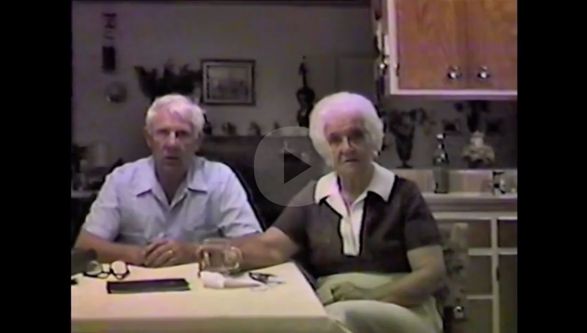
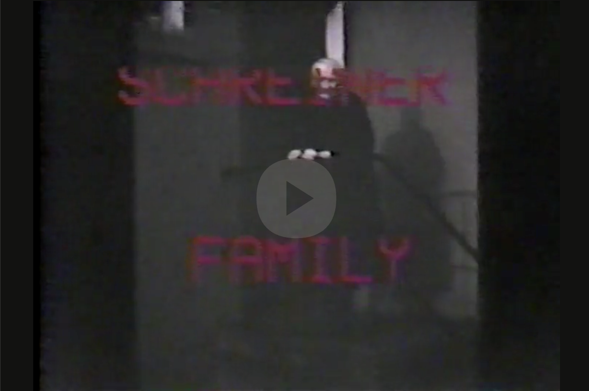

Adam and Emilie Tell Their Story [1983] — family video (click to play).Emilie’s Birthday [1983] — family video (click to play).Grandkids Megan and Edward “Interview” Oma and Opa (Emilie and Adam) [1983] — family video (click to play).

Fred Schreiner Narrates the Family Story with Photos [1983] — family video (click to play).
![Play video: Emilie’s Birthday [1983] — family recording](assets/movie-thumbs/Emilie-Bday-1983.png)